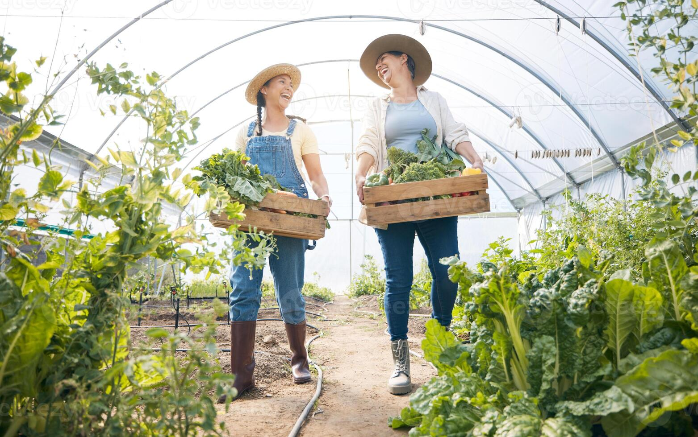

O GasControl oferece uma solução completa para monitoramento de níveis de gás carbônico em ambientes hidropônicos, garantindo condições ideais para o crescimento das suas plantas e maximizando a produtividade.

Nosso sistema de monitoramento utiliza tecnologia de ponta para garantir o ambiente ideal para suas plantas
Sensores de CO₂ instalados estrategicamente monitoram os níveis de gás em tempo real
Dados coletados são transmitidos continuamente para o sistema central
Visualize gráficos, históricos e tendências dos níveis de CO₂ em uma interface intuitiva
Receba notificações quando os níveis estiverem fora dos parâmetros ideais

Nossa solução oferece resultados comprovados e benefícios tangíveis para sua produção.
Clique no botão abaixo e faça uma simulação sobre o que podemos
agregar ao seu negócio!